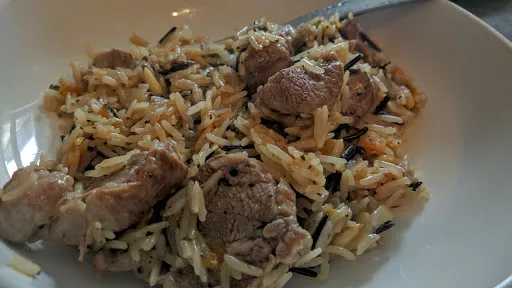

Turkish lamb pilau
30 mins
Serves 4

Ingredients
- handful pine nuts
- 1 tbsp olive oil
- 1 large onion, halved and sliced
- 2 sticks cinnamon, broken in half
- 500 g lean fillet or leg of lamb, cubed
- 250 g basmati rice
- 1 lamb or vegetable stock cube
- 12 ready to eat dried apricots
- handful mint leaves, roughly chopped
Instructions
- Dry fry the
pine nutshandful
in a large pan until lightly toasted, then tip on to a large plate.
- Add the
oil1 tbsp
to the pan, then fry the onion1 large
and cinnamon2 sticks
together until they start to turn golden. Turn up the heat, add the lamb500 g
and cook until the lamb500 g
changes colour, then add the rice250 g
and cook for 1 minute, stirring all the time.
- Add 500 ml boiling water, crumble in the
stock cube1
, add the apricots12
and season to taste.
- Turn down the heat, cover, and simmer for 12 minutes until the
rice250 g
is tender and the stock has been absorbed.
- Toss in the
pine nutshandful
, add the minthandful
and serve.
-
kcal
584
-
fat
24 g
-
saturates
9 g
-
carbs
65 g
-
sugar
0 g
-
fibre
3 g
-
protein
32 g
-
salt
1.4 g
BBC Good Food: One-pot Dishes
Short Link
Long Link